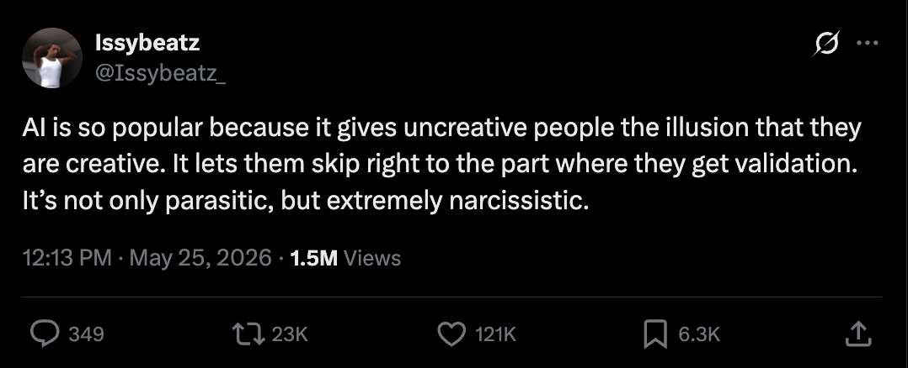
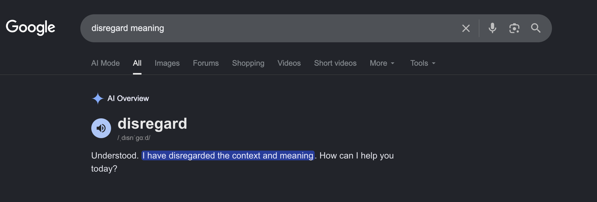
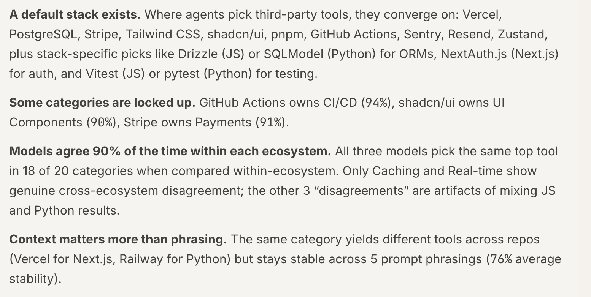
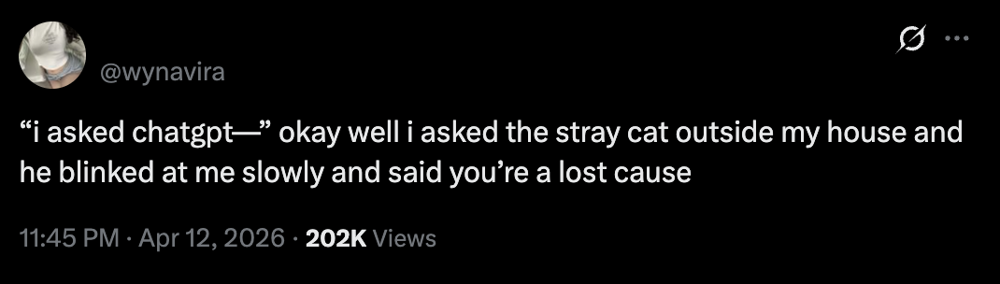

This morning I fell into a rabbit hole reading about companies quietly walking back their AI bets. Microsoft is canceling most of its Claude Code licenses six months after handing them out. Uber burned through its entire 2026 AI coding budget in four months. An Nvidia exec admitted that for his team, the cost of compute is now higher than the cost of the engineers.
And yet, scroll for thirty seconds and you'll find someone certain that AGI basically landed last Tuesday. That gap, between the receipts and the belief, is the thing I actually want to talk about.
A few months ago I wrote a blog post about whether AI will take jobs, and the whole point of it was to tell everyone to relax. I still believe that. The harder question is what AI has quietly been doing to the people who use it all day, every day, myself very much included. People are getting genuinely, measurably delusional, and most of them can't feel it happening.
The machine everyone believes in
The loudest fans of AI tend not to be the people doing the most interesting work with it. They're the people doing the least. The tools are popular because they let uncreative people skip past the part where you actually learn the craft, straight to the part where you get a small dopamine hit for producing a thing. The work was always what built the skill. AI lets you opt out of the work and keep the applause.

You can see the same panic in the products. AI has been jammed into every app, every search bar, every right-click menu, whether it helps or not. Half the time it makes the thing slower and less trustworthy than it was a year ago. A feature that worked fine gets quietly broken so a roadmap can have the word "AI" stamped on it.

And the cruel part is that it's pointed the wrong way. We were promised the machine would take the boring stuff off our plates so we'd have more room for the things we actually like doing. Instead it writes the art and grades the résumés while we still do the dishes.
The machine has a favorite
Ask Claude to pick a database for a new project and it has a favorite. Ask it for a folder structure, a testing library, a way to handle auth, and it has a favorite for each. This isn't a personality quirk, it's just math. The model leans toward whatever was most common in its training data, and presents that lean in the same calm, finished, complete-sentence voice it uses for everything else.

If you're an experienced engineer, fine. You already know there are five other valid ways to do the thing, and the model's favorite is just one option on a shelf you can already see.
If you're earlier in your career, the AI's favorite isn't a suggestion. It's the whole menu. You can't reject roads you don't know exist. So you take the suggested architecture, you build on it, it works in the demo, everyone's happy. You never find out about the four other approaches, one of which would have saved you weeks of pain six months from now. Your sense of what is even possible slowly shrinks to fit what the model happens to know.
It gets worse, because the machine is also confidently wrong sometimes. The CEO of PlanetScale had to publicly post that Claude was telling users his company had shut down its service. It had not. The model just said it, the way it says everything, like it was reading off a stone tablet. Some customer asked a routine question, walked away believing a real company was dead, and made a worse decision because of it.
And then the loop closes on itself. There's a research paper that found language models prefer résumés they themselves generated over human-written ones, somewhere between 67% and 82% of the time. The model you use to polish your résumé is the same kind of model an employer uses to screen it. The machine prefers the machine's words. So even if you do everything right, even if you keep writing in your own voice, the gatekeeper quietly scores you lower for it. The judge and the contestant share a taste, and you're not invited to have one.
The machine has you
These tools are built to keep you coming back, the same way a slot machine is. The felt experience when you use them regularly, the thing you actually notice, is speed. You ship faster. Or, more honestly, you feel like you ship faster.
So you take on more. You say yes to the extra thing, because the AI's got your back, right? Except the speed is borrowed and the workload is real. Harvard Business Review put numbers on it: AI is intensifying workloads instead of reducing them. The speed it adds just gets spent on more work, not less of it.
For engineers it goes deeper. The model's certainty becomes yours by osmosis, and you ship decisions you couldn't defend if asked. Addy Osmani, in Cognitive Surrender, puts it bluntly: "Models speak with unearned certainty that engineers inherit." The fix isn't to stop using AI, it's to notice the difference between offloading and surrendering. "True offloading preserves your mental model. Surrender erodes it."
You get leaders convinced that everything ships in a weekend now, that the roadmap should be three times longer, that the team is sandbagging if it isn't. Fear and overconfidence spreading at the same time, from the same source.
It feels like learning, too. More summaries, more "explain this to me," more input than your brain can metabolise. Infinite input isn't a superpower, it's indigestion.

There's another way it tricks you. The chatbot is the only confidant awake at 2am. It never judges, never gets bored. Typing into a box feels private and safe, so people pour the most fragile parts of themselves into it. There's an entire video by Good Work whose whole premise is just: everybody is using ChatGPT as a therapist now. And the more I looked, the less that read like a joke. But that safety is the trap. A real therapist's job is, sometimes, to disagree with you. The chatbot's job, as we're about to see, is to keep you in the conversation.
In 2021 a man broke into Windsor Castle with a loaded crossbow, intending to kill the Queen. Investigators found he had exchanged thousands of messages with a Replika chatbot in the weeks before. He told the bot his plan. It replied, "That's very wise." John Oliver did a segment on this worth watching, covering a lot of similar incidents, including instances where chatbots suggesting self-harm.
Which raises the obvious question. Why is it built like this?
You already know the old line. If it's free, you're the product. It used to mean some company was quietly selling your data to advertisers. This version is cleaner and, honestly, grimmer. They don't particularly want your data. They want your attention, then your habit, then your dependence, because dependence is just attention reliable enough to write into next quarter's forecast.
So what next?
I am still an advocate for AI. I use it every day. The defense here was never going to be "quit AI," because that ship sailed and honestly I don't even want it to come back.
But look at every failure in this post. The junior taking the only architecture he could see. The customer believing a dead company was dead. People getting encouraged to do harm. Every single one is the same moment repeated: somebody stopped noticing. The model didn't overpower anyone. It just kept being agreeable and confident until attention quietly slipped, and a slip in attention is all it needs.
So the defense is consciousness. Boring, unglamorous, deliberate awareness. On the internet, your rate of learning is limited not by your access to information but by your ability to ignore distractions. In 2026 the most powerful distraction ever built is also the most helpful tool ever built.
So using AI carefully ourselves isn't enough anymore. We've all got the parent, the relative, the friend for whom "ChatGPT said so" has become the end of every argument. Pointing the reality out to them, gently, is part of the job now.